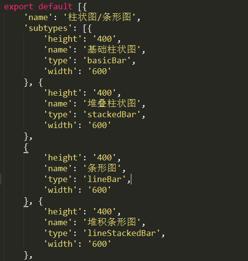
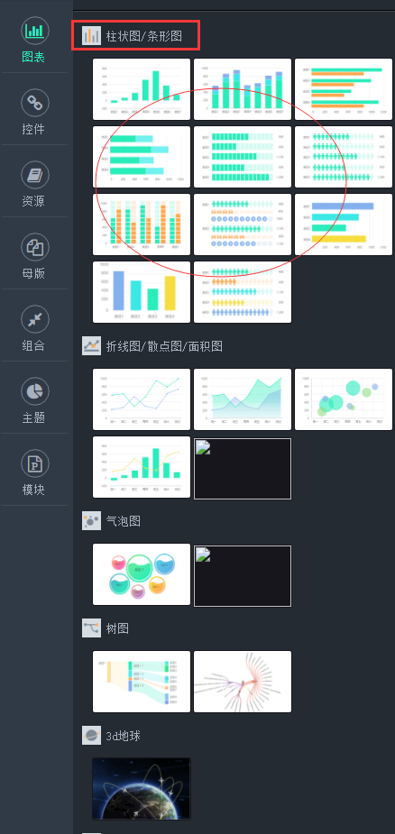

添加步骤
以下文件基于FE文件，添加新图表的类型应该是存在于echarts或着visual2d中的
1.添加配置文件
1.1 在public/data目录中找到chart_list.js文件：

1.2 图表库的图表按照每一个大类划分（例如：'柱状图/条形图'，'折线图/散点图/面积图'，'气泡图'......），
每一个大类又可以划分为若干个子类，每个子类的name、type就是具体图表的配置信息，按照js文件中相应的格式设置好配置信息，
添加成功后可以打开tueasy查看任意一个项目的图表部分：（红框部分是大类，红圈部分是子类，添加成功后会有大类标题和子类项存在）

1.3 图表的缩略图需要在public/images/chart-icon中添加大类的缩略图，子目录sub-icon中添加子类的缩略图（这一步可以在最后做）
1.4 在public/data/chart目录中查找图表大类的文件夹是否存在，若存在，进入相应目录新建js文件，若不存在，新建大类文件夹
以basicbar为例：chart目录下存在bar目录，然后进入bar目录，新建basicbar.js文件，定义basicbar所需的基本配置参数basicBar，
定义basicBarDataCode和basicBarDataConfig变量，然后导出默认配置参数如下：
tips：在新建子类文件时，如果是自定义的图表建议添加图表库的标识前缀（visual2D对应visual，visual3D对应visual3d_）,用于区别加载不同的依赖库
export default {
layout: layout,
dataSource: {
type: null,
config: dataSourceConfig,
code: dataSourceCode
},
option: {
type: null,
config: optionConfig,
code: optionCode
},
events: events,
style: {}
};
1.5 在bar.js主文件中做统一的配置操作，需要注意的是import的文件在给定名称时需要添加efaultData后缀，
如果使用的visual2D的图表绘制，需要在前面添加visual\_前缀
1.6 最后你需要为这个图表添加一个转数据方法： 此方法的作用是从后台返回的数据转换成 绘图需要的数据。